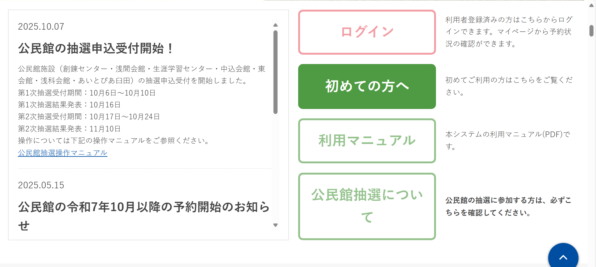
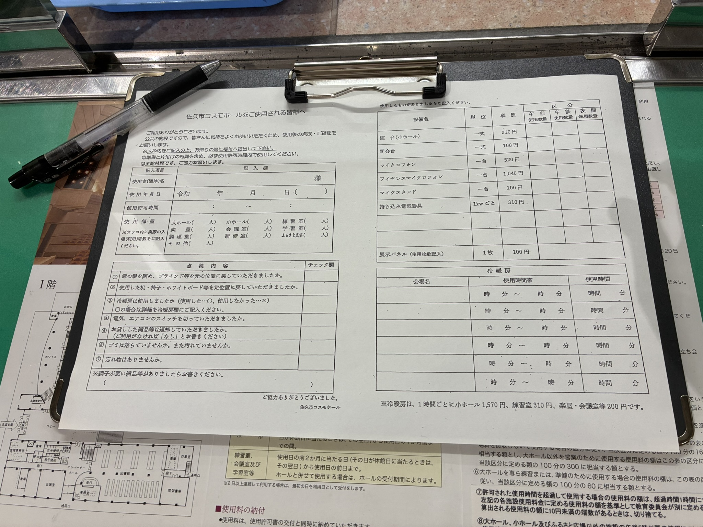
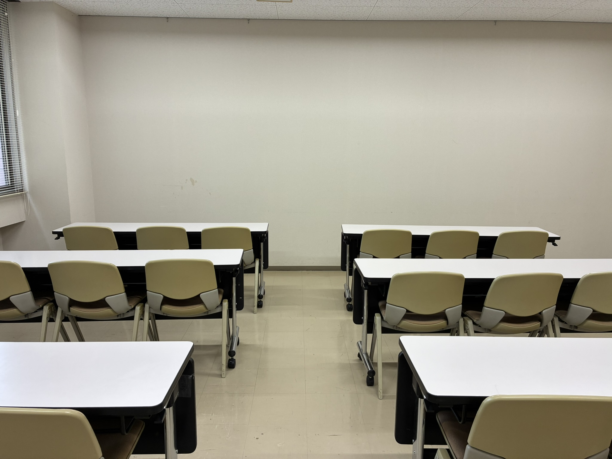
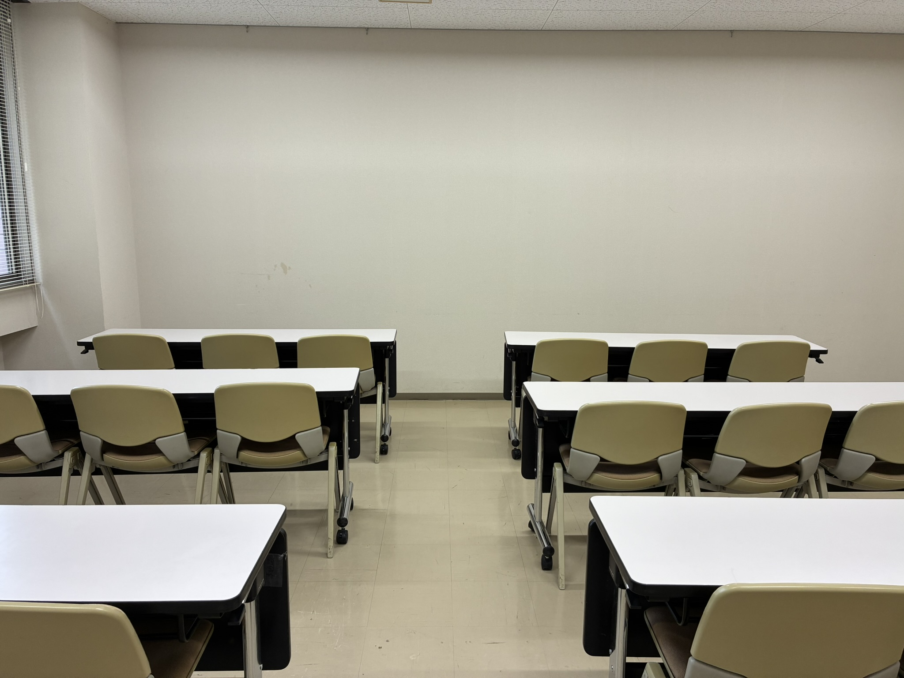

実際に借りてみました！
こんにちは！コスモホールスタッフのKです。
利用者の皆さんの立場を理解するために、スタッフの私が実際に佐久市コスモホールの会議室を個人利用してみました。
初めての方でも安心して利用できるよう、予約から当日の利用まで、写真付きで詳しくレポートします💡
今回利用した部屋
今回は佐久市コスモホールの研修室（2階）を借りて利用しました。 少人数の打ち合わせやセミナーにぴったりの、静かで落ち着いたお部屋です。
1佐久市コスモホールの会議室をWebで予約
窓口でも予約できますが、
佐久市のWeb予約システムから簡単に空き確認・予約ができます！
ただし、初めて利用する場合は利用承認に時間がかかるので注意が必要です。
Web予約が初めての方は、トップ画面の下にある「初めての方へ」を押して、手続きを進めてください。
💡今回私は初めてのWeb予約だったので、利用申請を行いました。土曜日に申請して、承認が下りたのは月曜日でした。余裕を持っての申請がおすすめです
利用承認が下りたら、システムから承認メールが届きます。システムにログインして予約します。
操作自体はシンプルですが、コスモホールの部屋の詳細はこのシステムでは確認できません。 先にコスモホールのウェブサイトを確認して部屋を決めてから、予約するのがおすすめです！
Web予約は利用日の3営業日前まで可能です。それより直前の利用については、直接電話で佐久市コスモホールにお問い合わせください。
予約状況はマイページでいつでも確認できます。利用前日のリマインドメールなどは届かないので、自分でカレンダーなどに入れておきましょう📅
2利用料の支払い
予約後、数日すると請求書が登録住所に郵送されます。
銀行振込または窓口で支払います。私は出勤ついでに窓口で払いました💰
支払いが完了すると、許可書がもらえます。
利用当日に必ず持参する必要はありませんが、念のためスマホで写真を撮っておくと安心です📱
3利用当日の流れ
駐車場について
利用日は大ホールでイベントがあり、ホールに一番近い駐車場は満車💦
道路を挟んだ向かい側の駐車場に停めました。
駐車場は複数あり、数百台分のスペースがあるので停められないことはそうそうありません。念のため、大ホールでイベントがあるか、コスモホールのイベントカレンダーで事前にチェックしておくと安心です！
受付で手続き
まずは受付に声をかけます。
「佐久市コスモホールをご使用される皆様へ」という用紙をもらいます。退室時に必要事項を記入のうえ、返却することになります。

部屋の鍵は基本的にスタッフが開けておいてくれるので、そのまま部屋に向かいます。
部屋の場所が分からない場合は、スタッフに尋ねて案内してもらいましょう。
研修室に入室
今回使ったのは2階の一番奥にある研修室です。
暖房を使う場合は、このスイッチを入れます。
※暖房は有料（1時間200円）ですので、必要な場合のみ入れましょう。
電源コンセントは2か所にあります。
（※電気料は有料です。午前or午後のみなら310円です）

机と椅子は自由に動かせるので、用途に合わせてレイアウト変更できます💺
壁が白いので、プロジェクターを直接投影できそうです！小型プロジェクターは330円でレンタルできます（2024年導入の新品です✨）
 

退室時
利用が終わったら、机や椅子を元の状態に戻して退出します。
「佐久市コスモホールをご使用される皆様へ」の点検欄を見ながら、忘れ物がないかなど確認しましょう✅
最後に受付で用紙を返却し、利用に応じて電気料や設備料を支払って終了です。
コスモホールは現金のみの取り扱いです。事前に現金を用意しておきましょう💴
実際に利用してみた感想
良かったポイント
- 初めての利用でも、予約は想像以上に簡単だった
- 利用料が安い！（特に冷暖房が不要な時期は最高）
- 駐車場が広くて停めやすく、安心
- 秋は紅葉がきれい🍁
ちょっと気になったこと
- 初回はアカウント申請に時間がかかる（特に土日祝に申請した場合）
- wifiが会議室では使えない（使えるのはロビーだけ）
- 窓口では現金払いのみ
- 予約のキャンセルや変更がWebでできない
- リマインドメールが来ない
全体的な感想
全体的にはスムーズに利用できました！✨
利用料もリーズナブルで、初めてでも安心して使えます！
今回、参加者を募集してWebデザインの勉強会を企画したのですが、やはり告知が一番の課題でした。
主催者として告知方法を工夫することは当然なのですが、ホールが応援してくれたら嬉しいな…と。
コスモホールスタッフとして、このあたり何かできないか考えていきたいと思います！
ぜひ皆さんも一度ご利用いただけると嬉しいです。
利用した感想もお寄せいただけると改善に繋げられます
よろしくお願いします😊